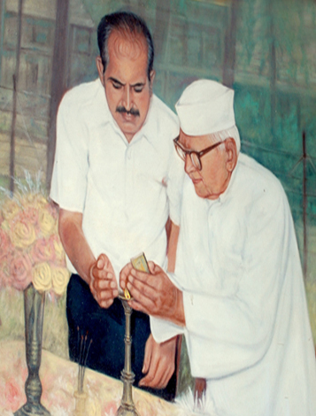

About Us:
Damania Hospital Trust, Gandevi is a non profit organization. The trust was formed by the foresighted and outstanding few Kshatriya members of town Gandevi in Navsari district with an intension to provide medical services at subsidized rates to the economically less privileged people without considering casts, creed, sex or religion of Gandevi Taluka and its surrounding villages.
The trust made a humble beginning by creating N.J. Damania Clinic in a one small room to serve patients in 1991. As time passed, the demand for the service from the patients increased. The trust converted the Clinic into N.J. Damania Sarvajanic Hospital in 1998 with the following objectives..
Objectives:
To create medical facilities and to provide timely primary medical treatment in rural areas
To reduce burden of urban prohibitive and expensive medical treatment.
To provide pertinent information about illness and also its treatment to patients
To provide care and shelter to senior citizens through our nursing home.
To train and prepare youngsters by providing seven para medical courses in our Para Medical Academy
To provide free food to indoor patients through our Bhojanalay.
To provide Ayurvedic medical treatment free of charge
We appreciate and thank our donors, without their valuable help we would not have been able to achieve this progress. The hospital has now more than 95 patients-beds and 24 different departments serving more than 90,000 patients a year.We hope to get the same support in the future from our well wishers, friends and respected donors.